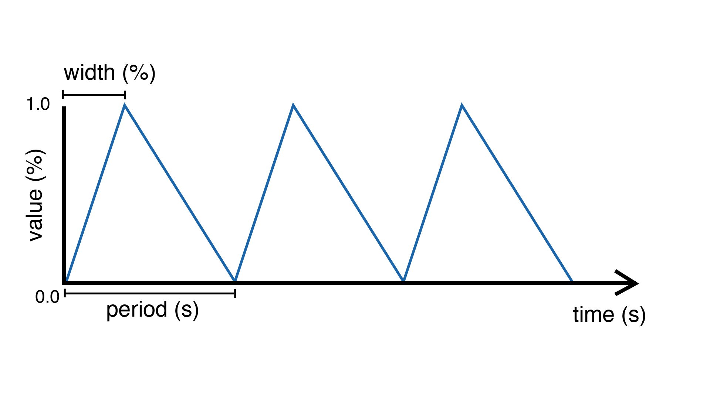

Generating Waveforms
In this section, we will explore waves (also called oscillators), essential tools for creating dynamic and expressive media. Oscillators generate repeating waveforms, which can control various outputs such as LEDs or motors. We will also learn how to visualize signals and shape different kinds of waveforms. We will then introduce combining different waves together, either by adding them or through modulation. Finally, we will look at how to use randomness to generate noisy waveforms that feel more natural.
Note
To follow along with the examples, set up a simple circuit:
A potentiometer connected to
A0to control proprties dynamically.A button connected to pin
2with an internal pull-up resistor to trigger actions.An LED connected to pin
9(PWM capable) through a 330 \(\Omega\) resistor.
Visualizing Waves with the Serial Plotter
In this section, we will use serial communication to send data from our Arduino board to our
PC so as to visualize the waves in real time. The print() and println() functions allow
you to send data to the serial, which is invaluable for debugging and visualizing data. They will
provide a way to graphically observe how wave properties like amplitude, phase, or frequency affect
the output.
Single Signal
To visualize the data, open the Serial Plotter in the Arduino IDE. The Serial Plotter can graphically display waveforms by interpreting each printed value as a separate line on the graph, making it an invaluable tool to visualize signals such as sensor values and waveforms.
Example: Print the value of the potentiometer:
#include <Plaquette.h>
AnalogIn pot(A0); // The potentiometer
void begin() {}
void step() {
println(pot); // Print the potentiometer value and ends the line
}
Multiple Signals
For multiple signals, print their values separated by spaces in a single line, followed by a
newline using println().
Example: Print the value of the potentiometer and a sine wave:
#include <Plaquette.h>
AnalogIn pot(A0); // Potentiometer input
SineWave wave(2.0); // Sine wave with period of 2 seconds
void begin() {}
void step() {
print(wave); // Print wave value
print(" "); // Print white space
println(pot); // Print the potentiometer value and ends the line
}
Types of Waves
Plaquette provides 3 types of waves:
SquareWave: Alternates between two levels with sharp transitions. Useful for creating rhythmic on-off patterns such as blinking LEDs or simple tone generators for buzzers. Possesses some properties of digital units.

TriangleWave: Smoothly transitions between two levels in a linear fashion. By varying the width of the wave, you can create a sawtooth wave (width = 0) or an inverted sawtooth wave (width = 1). This is ideal for simulating ramping motions or gradual changes in brightness.
SineWave: Produces a sinusoidal waveform for smoother modulation. Commonly used for creating natural, flowing transitions, such as smooth dimming or speed control.

{kind=link}
You can visualize these waves on the Serial Plotter by streaming their values.
Example: Display different waves for comparison:
#include <Plaquette.h>
// Three wave types.
SquareWave square(1.0);
TriangleWave triangle(1.0);
SineWave sine(1.0);
void begin() {}
void step() {
// Print all wave values separated by spaces
print(square); print(" ");
print(triangle); print(" ");
println(sine);
}
Wave Properties
Oscillators are defined by their period, width, frequency, amplitude, and phase. Let us explore these properties and their corresponding functions:
period(): Sets the duration of one cycle in seconds.
width(): Controls the balance between the rising and falling portions of the wave cycle (in range [0, 1]). For each wave type, this property has a specific effect:
For SquareWave, it adjusts the duty cycle (the ratio of ON to OFF time).
For TriangleWave, it determines whether the wave skews towards a sawtooth (width = 0) or inverted sawtooth (width = 1).
For SineWave, it shifts the inflection points of the wave, altering its symmetry.
frequency(): Inverse of period; sets the cycles per second (Hz).
bpm(): Alternative way to set the frequency using beats per minute (BPM).
phase(): Sets the initial point in the wave cycle (as % of period) (in range [0, 1]).
amplitude(): Sets the peak level of the wave (as % of max) (in range [0, 1]);
Initializing Properties
The period and width of a waveform can be initialized when the unit is created.
Example: Assign period and width when creating the unit:
#include <Plaquette.h>
TriangleWave wave1; // period = 1 sec (default), width = 0.5 (default)
TriangleWave wave2(2.0); // period = 2 sec, width = 0.5 (default)
TriangleWave wave3(3.0, 0.1); // period = 3 sec, width = 0.1
Other properties are typically initialized in the begin() to build a specific waveform.
It is also common to initialize period and width in the same way for more expressive code.
Example: Assign some properties of a wave at program startup:
#include <Plaquette.h>
TriangleWave wave;
void begin() {
wave.frequency(2); // 2 Hz
wave.width(0.9); // width 90%
wave.phase(0.1); // dephased by 10% of period
wave.amplitude(0.5); // 50% amplitude
}
void step() {
println(wave); // Print wave value
}
Changing Properties During Runtime
Properties can also be changed in real-time in the step() function to create interactive or
evolutive effects.
Example: Control the width of the waves using the potentiometer:
#include <Plaquette.h>
AnalogIn pot(A0); // Potentiometer input
SquareWave square(1.0);
TriangleWave triangle(1.0);
SineWave sine(1.0);
void begin() {}
void step() {
// Assign new width value.
square.width(pot);
triangle.width(pot);
sine.width(pot);
// Print all wave values separated by spaces
print(square); print(" ");
print(triangle); print(" ");
println(sine);
}
Example: Control the period of the waves using the potentiometer. Necessitates remapping potentiometer value to appropriate ranges.
#include <Plaquette.h>
AnalogIn pot(A0); // Potentiometer input
SquareWave square(1.0);
TriangleWave triangle(1.0);
SineWave sine(1.0);
void begin() {}
void step() {
// Read new period value.
float newPeriod = pot.mapTo(0.5, 5); // Map to 0.5-5 seconds period
// Assign new period value.
square.period(newPeriod);
triangle.period(newPeriod);
sine.period(newPeriod);
// Print all wave values separated by spaces
print(square); print(" ");
print(triangle); print(" ");
println(sine);
}
Try using the potentiometer to control different wave properties and visualize the result using the Serial Plotter.
Accessors and Mutators
All properties in wave units have two variants:
A mutator variant allowing to change the value of the property. Example:
wave.period(3.0);.An accessor read-only variant that returns the current value of the property. Example:
float x = wave.period();
Tip
This naming convention is a standard in Plaquette and you will find it in other units as well.
Example: Increase the wave’s period by one second each time the button is pressed:
#include <Plaquette.h>
DigitalIn button(2, INTERNAL_PULLUP); // Button input
TriangleWave wave(1.0); // Wave with initial 1 second period
void begin() {}
void step() {
if (button.rose()) {
wave.period( wave.period() + 1 ); // Set period to current period plus one
}
println(wave); // Print wave value
}
Wave Addition
Adding waves together allows for the creation of complex and dynamic waveforms. By superimposing multiple signals, you can simulate natural phenomena, generate rhythmic patterns, or create rich textures for artistic applications. In Plaquette, wave addition is as simple as computing the average value of different waves.
One compelling example of wave addition is simulating a heartbeat. A heartbeat typically has two peaks: a stronger primary beat followed by a softer secondary beat. This can be achieved by adding two waves with different amplitudes and timings.
Example: Heartbeat simulation. This example uses two SineWave units: one for the primary
beat one for the secondary beat. The bpm() function sets the frequency of the waves in beats
per minute.
#include <Plaquette.h>
SineWave primary; // Main heartbeat wave
SineWave secondary; // Secondary beat
AnalogOut led(9); // LED for visualizing the heartbeat
void begin() {
primary.bpm(80); // Set primary beat to 80 beats per minute
secondary.bpm(2*primary.bpm()); // Set secondary beat to twice primary BPM
secondary.amplitude(0.8); // Secondary beat is less strong
}
void step() {
float heartBeat = (primary + secondary) / 2; // Combine and normalize waves
led.put(heartBeat); // Drive LED with combined signal
println(heartBeat); // Stream the combined wave for visualization
}
In this simulation, the primary sine wave provides the dominant rhythm, while the secondary
sine wave introduces a softer, complementary pulse. The resulting waveform mimics the double-thump
pattern of a human heartbeat.
Try experimenting with different wave types, amplitudes, and frequencies to see how the combined waveform changes. Try adding a third wave, making sure you divide the result by 3 intead of 2. Wave addition opens up endless possibilities for creating expressive and engaging outputs.
Modulation
Modulation involves using one oscillator to influence the properties of another, creating rich and dynamic effects. For example, a slower wave (also called a Low-Frequency Oscillator (LFO)) can modulate the frequency, phase, period, amplitude, or width of a faster wave.
Example: Modulate the frequency of a sine wave with a triangle wave:
#include <Plaquette.h>
TriangleWave modulator(10.0); // LFO (10 seconds period)
SineWave sine; // Main wave
AnalogOut led(9); // LED output
void begin() {}
void step() {
sine.frequency(modulator.mapTo(1.0, 10.0)); // Modulate frequency between 1 and 10 Hz
sine >> led; // Drive LED with modulated sine wave
println(sine); // Stream the modulated wave
}
Adding Noise with randomFloat()
While oscillators are incredibly useful for generating regular and predictable waveforms, there are
times when you may want to introduce randomness to add a sense of natural variation or lifelike behavior.
Plaquette provides the randomFloat() function, which is a powerful tool for generating random values.
Warning
Avoid using Arduino’s random() function as it returns integer numbers instead of floating-point numbers.
The randomFloat() function can be used in several ways:
randomFloat()generates a random float between 0.0 and 1.0.randomFloat(max)generates a random float between 0.0 andmax.randomFloat(min, max)generates a random float betweenminandmax.
These random values can be used to add noise directly to a signal.
Example: Add noise to a sine wave.
#include <Plaquette.h>
SineWave wave(1.0); // Base waveform
AnalogOut led(9); // LED output
void begin() {}
void step() {
float noise = randomFloat(-0.1, 0.1); // Generate noise value in [-0.1, 0.1]
float noisyWave = wave + noise; // Compute sine value + noise
noisyWave >> led; // Drive LED with noisy sine wave
println(noisyWave); // Stream the noisy sine wave
}
These random values can also be used to modify properties such as amplitude, frequency, width, or phase.
Example: Update the wave’s period according to a random walk. The potentiometer controls the amount of noise.
#include <Plaquette.h>
AnalogIn pot(A0); // Potentiometer input
SineWave wave(1.0); // Wave with initial period of 1 second
AnalogOut led(9); // LED output
void begin() {}
void step() {
float noise = randomFloat(-pot, pot); // Generate noise according to potentiometer value
wave.period( wave.period() + noise ); // Add noise to period
wave >> led; // Drive LED with noisy sine wave
println(wave); // Stream the sine wave
}
Example: Introduce randomness to the frequency of a triangle wave. Frequency updated on each push of the button.
#include <Plaquette.h>
DigitalIn button(2, INTERNAL_PULLUP); // Button input
TriangleWave wave; // Wave with default properties
AnalogOut led(9); // LED output
void begin() {
button.debounce(); // Debounce button
wave.frequency(5.0); // Start at 5 Hz
}
void step() {
if (button.rose()) {
wave.frequency(randomFloat(4.0, 6.0)); // Random frequency between 4 and 6 Hz
}
println(wave); // Stream the wave for visualization
}
Randomness can also be combined with modulation to create highly dynamic and expressive behaviors. Experiment with adding random noise to various properties and observe the effects using the Serial Plotter. Try to simulate a natural phenomena like a flickering flame or a lightning bolt.
Timing Functions
Oscillators offer various timing functions to control their behavior:
start(): Starts/restarts the oscillator.
stop(): Stops it and resets it.
pause(): Pauses the wave at its current point.
resume(): Resumes from the paused point.
togglePause(): Toggles between paused and running states.
isRunning(): Returns whether the oscillator is active.
setTime(): Sets the current phase of the oscillator based on absolute time (in seconds).
Example: Use the button to start and stop the wave:
#include <Plaquette.h>
DigitalIn button(2, INTERNAL_PULLUP); // Button input
SineWave sine; // Wave with default properties
AnalogOut led(9); // LED output
void begin() {
sine.frequency(2.0); // Initialize frequency to 2 Hz
}
void step() {
if (button.rose()) {
sine.togglePause(); // Pause or resume the wave
}
sine >> led; // Drive LED with sine wave
println(sine); // Stream the wave for visualization
}
Phase Shifting with shiftBy()
The shiftBy() function allows you to offset the phase of an oscillator relative to its current
position and returns the value of the dephased wave. This is useful for creating complex, synchronized
patterns.
Example: Shift the phase of a sine wave:
#include <Plaquette.h>
SineWave wave(5.0); // Sine wave with 5 seconds period
void begin() {}
void step() {
// Print shifted values separated by white spaces.
print(wave); print(" "); // 0% shift
print(wave.shiftBy(0.25)); print(" "); // 25% shift
print(wave.shiftBy(0.5)); print(" "); // 50% shift
println(wave.shiftBy(0.75)); // 75% shift
}
Conclusion
Oscillators are powerful tools for creating dynamic, expressive systems. By combining their waveforms, timing functions, and phase-shifting capabilities, you can achieve intricate and synchronized behaviors. Modulation and randomness add another layer of complexity, enabling you to create engaging and responsive media systems. Explore these features in Plaquette and see how waves can bring your projects to life.